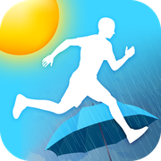
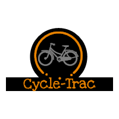

Run or Shine is an iOS application that displays current weather and suggests clothes to wear for a run outside.

Cycle-Trac is a web application that was built to conveniently track my cycling workouts/playlists from class to class.
Technologies used: Ruby on Rails
Blog: Keep up with my life experiences, and my progress on various tech projects. Check out here!